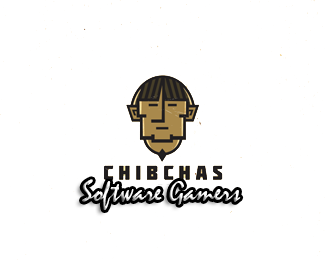

Chibchas
|  |
Los muiscas, también llamados Chibchas (al igual que su idioma), son un pueblo indígena de probable procedencia centroamericana que ha habitado el altiplano cundiboyacense y el sur del departamento de Santander, en el corazón de la actual República de Colombia, desde aproximadamente el siglo VI d. C. hasta la actualidad, y cuyos descendientes directos viven en los departamentos de Cundinamarca, Boyacá y parte de Santander. Una pequeña parte de su población está organizada en forma de cabildos indígenas en la ciudad de Tunja y en localidades del distrito de Bogotá como Suba, Bosa, Usme, Fontibón y Engativá, además de municipios vecinos como Chía, Cota y Sesquilé. Buena parte de la población actual de la Cordillera Oriental de Colombia es resultado del mestizaje entre los muiscas y otros pueblos, principalmente españoles. |
A cerca de
En esta página se encuentra información correspondiente a la tribu que se escogio para representar al grupo de ingenieria de software 3
Aun en construccion